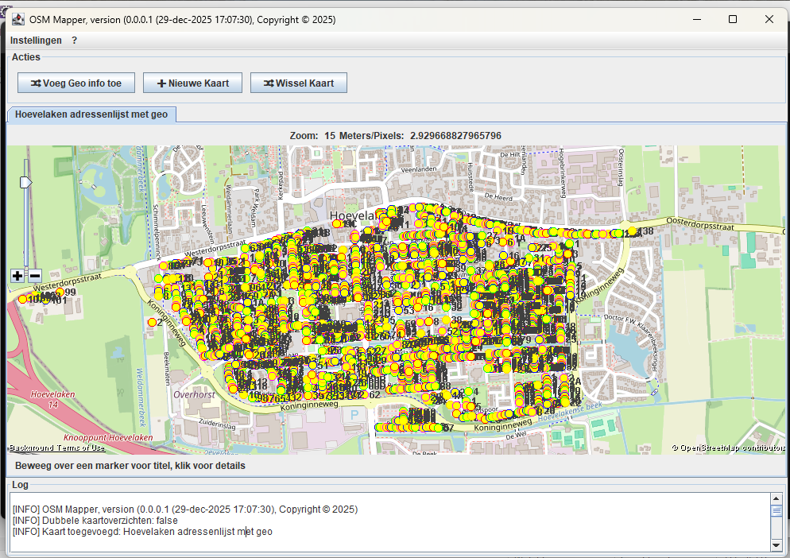
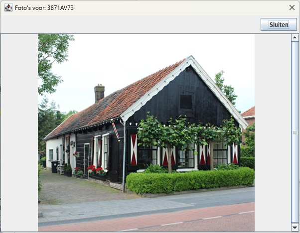
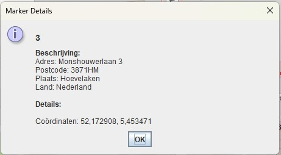

Deze Java-applicatie voegt markers toe aan een OpenStreetMap-kaart.

Verrijkt een Excel-bestand met latitude en longitude per adres. Maximaal één aanvraag per seconde (Nominatim OpenStreetMap).
Selecteer het invoerbestand.
Selecteer het uitvoerbestand.
Maakt een nieuw kaarttabblad aan.
Nieuwe kaart gecentreerd op Utrecht.
Wisselen via menu of tabblad.
Mailing applicatie wordt gestart, waarbij de gekozen kaart als input wordt gebruikt.

Als er foto's beschibaar zijn, dan wordt de knop "Toon Foto's (aantal) getoond.
In voorbeeld is er één foto aanwezig:


De volgende kleuren kunnen worden opgegeven (in Engels):
"AQUA", "BLACK", "BLUE", "CYAN", "DARKGRAY", "DARKGREY", "DARK_GRAY", "FUCHSIA", "GRAY", "GREEN", "GREY",
"LIGHTGRAY", "LIGHTGREY", "LIGHT_GRAY", "LIME", "MAGENTA", "MAROON", "NAVY", "OLIVE", "ORANGE", "PINK",
"PURPLE", "RED", "SLATEGREY", "TEAL", "WHITE", "YELLOW"
Fotomap
├─ 1234AA78
│ ├─ foto1.jpg
│ └─ ...
└─ 5678BB91
├─ foto1.jpg
└─ ...
Alternatief: foto in hoofdmap met naam POSTCODEHUISNUMMER_uniek.jpg